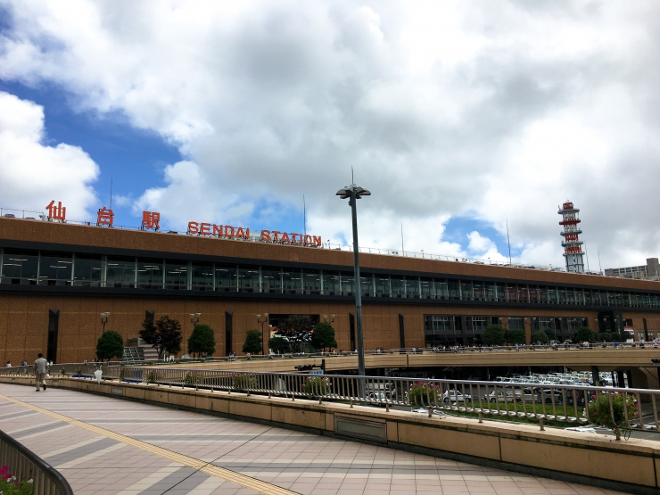
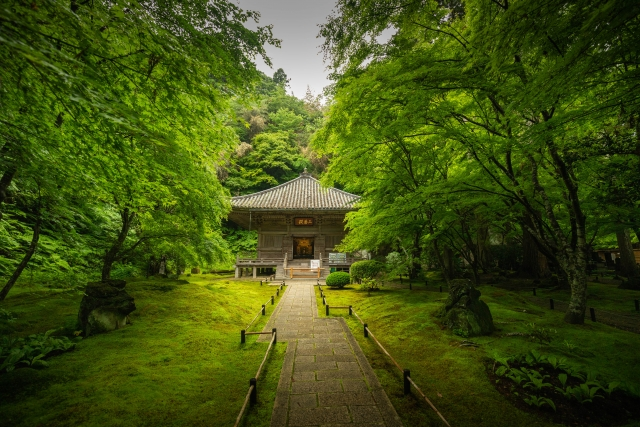
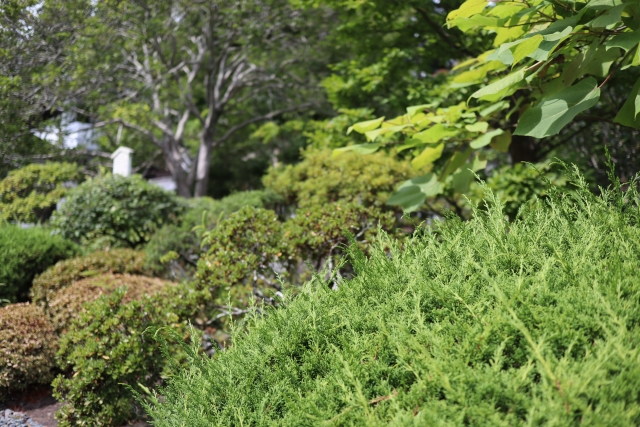
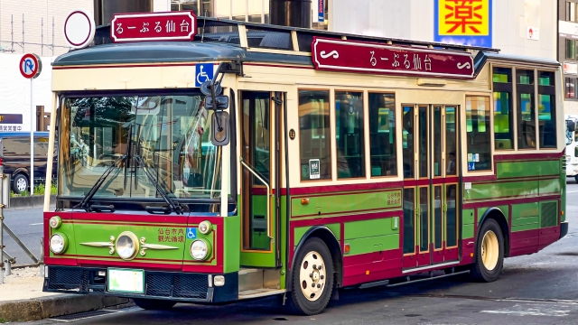
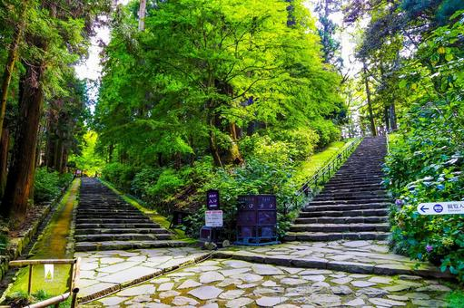
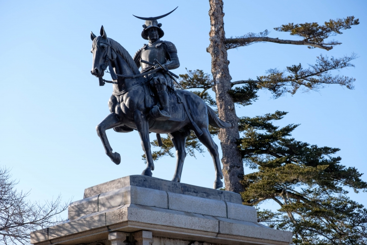
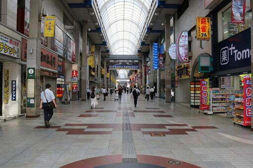

絶景の松島・仙台を巡る
日本三景の松島を存分に堪能し仙台の観光も楽しみたい方へ
エリア：宮城県仙台市、松島町
期間：１泊２日
交通費
| 移動手段 | 料金目安 | 所要時間 |
|---|
| 東京駅～仙台駅 |
|---|
| 新幹線 | 10,560円～20,310円 | 1時間半～2時間 |
| 特急（ひたち） | 9,280円～12,940円 | 約4時間30分～ |
| 普通電車（在来線） | 6,050円～ | 約7時間 |
| 高速バス（夜行バス） | 2,400円～7,600円前後 | 約5時間 |
| 仙台駅～松島海岸駅 |
|---|
| JR仙石線 | 420円×2 | 約40分 |
| 仙台市観光バス(るーぷる仙台) | 料金目安 |
|---|
| 「るーぷる仙台一日乗車券」 | 620円 |
総交通費：3860～21770円
＊なおこちらの料金は片道・大人の1人当たりの料金ですです。
コース
1日目
2日目
1日目
1:東京駅
新幹線などを利用して仙台駅に行きます。
2:仙台駅

仙台駅に到着。
まずは、JR仙石線を利用して松島海岸駅を目指します。
3:円通院

円通院は宮城県松島、瑞巌寺に隣接した臨済宗妙心寺派の寺院、伊達政宗公嫡孫「光宗公」の菩提寺です。色彩豊かな庭園があり、夏にはバラ園、秋には紅葉など四季折々の景色を一年を通じて楽しめます。
4:瑞巌寺
-->
瑞巌寺は正式名称を「松島青龍山瑞巌円福禅寺」といい、現在は臨済宗妙心寺派に属する禅宗寺院。安土桃山美術を現在に伝える貴重な建築物であることから、昭和28年(1953)に本堂と御成玄関が、昭和34年(1959)に庫裡と本堂をつなぐ廊下が国宝に指定されています。平成30年(2018年)には9年に及んだ「平成の大修理」が完了し、伊達政宗公が心血を注いで完成させた創建当初の姿が現在に甦りました。宝物館（青龍殿）には、国指定重要文化財の本堂障壁画群、伊達家歴代藩主画像をはじめ、伊達家から寄贈された貴重な品々、歴代住職の肖像画や臨済文化が創出した墨跡、瑞巌寺の前身・中世円福寺に関する発掘出土品、日本三景松島に関する絵画や書籍等が展示されています。
5:五大堂

松島のシンボル・五大堂は、大同2年（807）坂上田村麻呂が東征のとき、毘沙門堂を建立し、天長5年（828)慈覚大師円仁が延福寺（現在の瑞巌寺）を開基の際、「大聖不動明王」を中心に、「東方降三世」、「西方大威徳」、 「南方軍荼利」、「北方金剛夜叉」の五大明王像を安置したことから、五大堂と呼ばれるようになりました。
※拝観は無料ですが、夕方には閉門しますのでご注意ください。
※五大堂に行くには橋を渡らなければなりませんが、透かし橋のため車椅子で渡ることは出来かねますので、ご注意下さい。
2日目
7:仙台

まずはレトロなフォルムが人気の「るーぷる仙台」へ乗車しよう！循環型観光バス「るーぷる仙台」に乗ると、仙台市内の観光スポットを効率よく巡ることができますよ。仙台駅西口バスターミナル16番乗り場から。
8:瑞鳳殿

杉木立に覆われた境内に仙台藩祖伊達政宗公の御廟瑞鳳殿、二代忠宗公の感仙殿、三代綱宗公の善応殿があります。資料館には歴史文化の関係資料等が展示されています。
9:仙台城跡

伊達62万石の居城、仙台城（青葉城）。今では石垣と再建された脇櫓が往時をしのばせます。政宗公騎馬像の横に立てば、天下取りの野望に燃えた政宗公と同じ視線で、市街を展望できます。また、青葉城資料展示館で実施中の「仙台城VRゴー」も人気。周囲には仙台ゆかりの土井晩翠の文学碑も。本丸跡からは仙台市内、太平洋を一望できます。
観光スポットの詳細はこちら
10:大崎八幡宮

慶長12（1607）年、伊達政宗公によって創建。長床が国の重要文化財に、石鳥居が県の重要文化財に指定されています。参道の静かなたたずまいを抜けると、荘厳な社殿が現れます。権現造りと言われる建築様式は、外観は長押上に鮮やかな胡粉極彩色の組物（斗きょう）や彫刻物を施し、下は総黒漆塗りと落ち着いた風格を現し、拝殿正面には大きな千鳥破風、向拝には軒唐破風を付け、屋根は柿葺と意匠が凝らされています。
11:せんだいメディアテーク

ギャラリー、図書館、映像センター、目や耳の不自由な方への情報提供など様々な機能を持つ複合施設。館内では壁のないゆったりした空間を利用し多彩な催し物が行われます。ガラス張りの建物は定禅寺通で一際目立つ建物です。美術や映像文化の活動拠点であると同時に、様々なメディアに関連した活動を支援する公共施設です。
12:アーケード

定禅寺通から仙台駅まではアーケードで６つの商店街がつながっています。仙台ならではのグルメやショッピングを楽しみながら、仙台市中心部を散策してみてはいかがですか？
13:帰宅
絶景の松島・仙台を巡る旅はこれにて終了となります。
宮城・仙台はいかがだったでしょうか。
ページの先頭へ